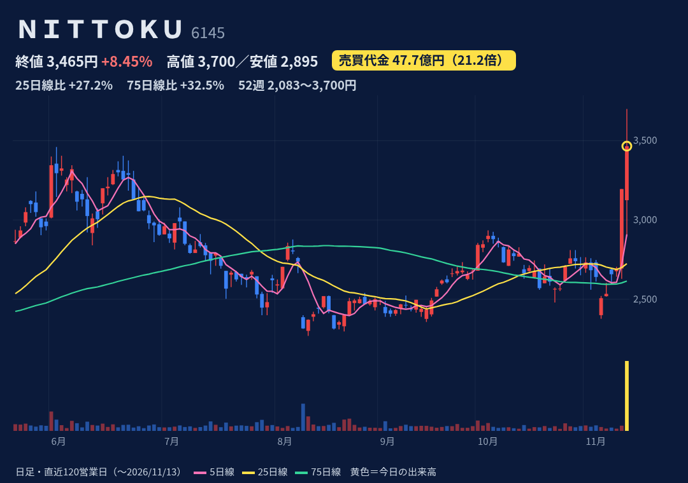
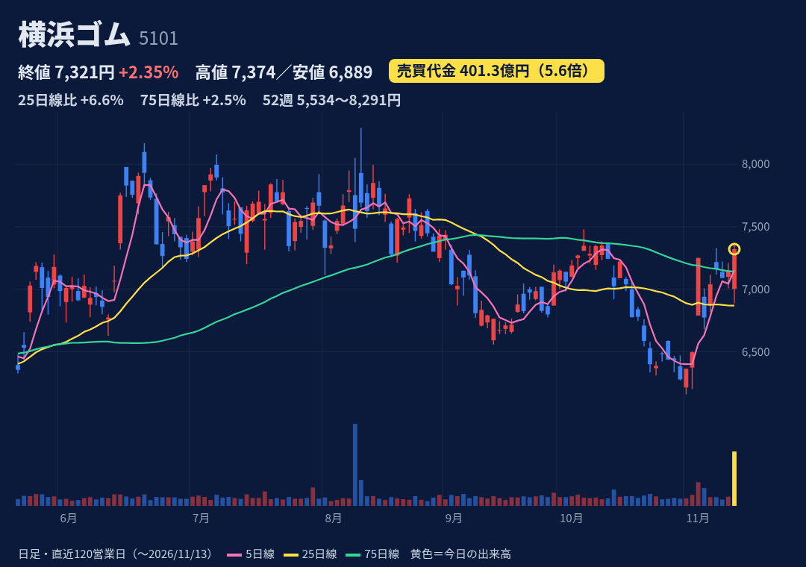
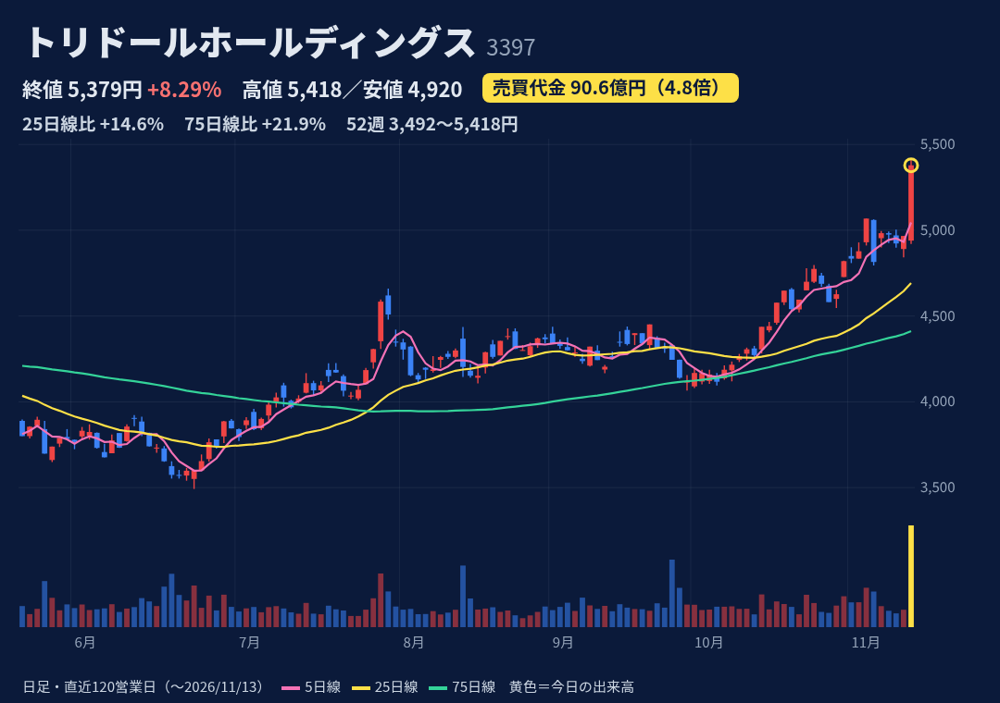
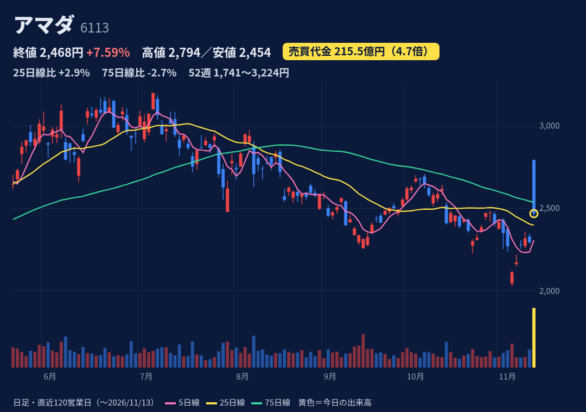
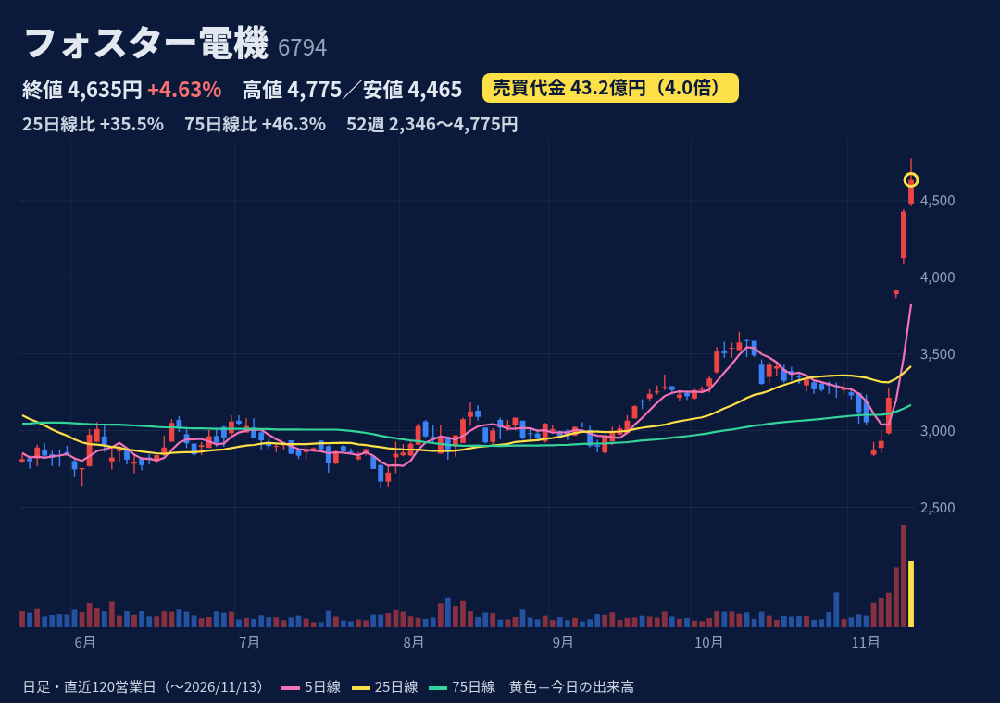
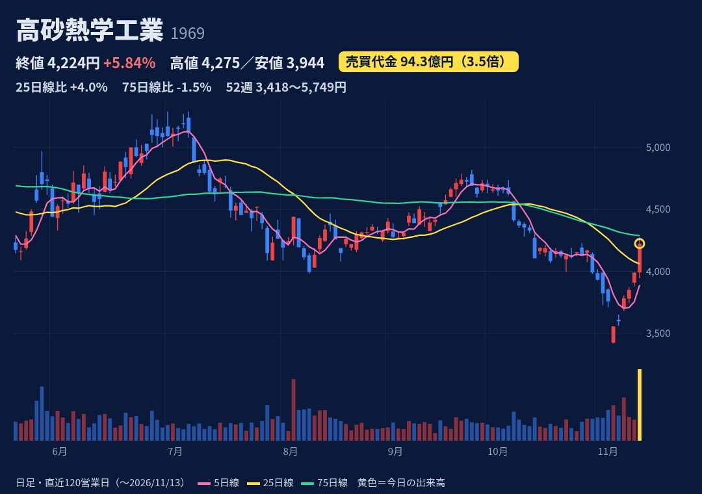

コイル用自動巻線機の最大手。モーター巻線・各種自動化設備、非接触ICも。
11/12 14:45ヒューマノイドロボ向けモーター生産設備で約82億円受注（北米・顧客非開示）→同日S高。11/13 9:30約102億円の追加受注、累計約184億円。売上計上は28/3期以降
11/13引け後発表の上期：売上174億(-9.8%)、営業益19.4億(-18.9%)。期初計画比で売上-15.4%（納期ずれ）。通期売上440億・営業益51億(-6.2%)据え置き
寄り3125(前日比-2.2%)→高値3700→終値3465(+8.45%)、上ヒゲ235円(6.8%)。前日11/12はS高3195。52週高値更新、25日線+27%・75日線+33%。過去1年の急騰後5日は-9%〜+9%とまちまち
11/06週 買残95.3千株・売残63.5千株・倍率1.50（10/23は倍率14.1→売残が急増）。急騰前の数字。日々公表・増担保は該当なし（JPX 11/12更新時点）
上期は計画未達（売上計上が下期へずれ込み）。受注の売上は28/3期以降で今期業績影響なし。顧客名非開示。売買代金平常時2億円程度の中型株で21倍の過熱

タイヤ大手。農機・建機用OHT（トレルボルグ等）、ホース配管・工業資材も。
11/13 14:00に3Q決算（IFRS）発表。1-9月の売上・事業利益・純利益とも過去最高、通期予想は据え置き。株価は14時台に安値6889→終値7321。買われた理由を直接報じた記事は未確認
1-9月：売上9669億(+10.2%)、事業利益1474億(+46.3%)、純利益960億(+45.2%)。7-9月事業益515億(+33.5%)。通期事業利益1925億据え置き→進捗76.6%
寄り7003(-2.1%)→安値6889→終値7321(+2.35%)、上ヒゲ小。52週高値8291(8/12)・安値5601、位置64%。25日線+6.6%・75日線+2.5%。11/5にも原油安連想で+11.6%
11/06週 買残542.2千株・売残65.4千株・倍率8.29（10/30は20.65から低下）。日々公表・増担保は該当なし
据え置き通期計画だと10-12月の事業利益は前年比約3割減の計算（推計）。米セーラム工場閉鎖費用。為替・原材料・原油に左右される大型株

「丸亀製麺」を展開する外食大手。海外出店を拡大中。
11/13 13:00に上期決算（IFRS）発表。事業利益123.6億(+4.9%)で通期計画220億に対し進捗56.2%。海外事業が大幅増益。発表後に後場急伸し年初来高値更新（みんかぶ報道）
上期：売上収益1452億(+2.4%)、事業利益123.6億(+4.9%)、純利益62.4億(+4.5%)。7-9月純利益は2倍。丸亀製麺は人件費増で減益。通期（事業益220億）据え置き
寄り4940→高値5418→終値5379(+8.29%)、ほぼ高値引け。52週高値更新（位置98%）。25日線+14.6%・75日線+21.9%。7/29に+6.4%後5日で-9.9%の前例
11/06週 買残59.0千株・売残129.8千株・倍率0.45（売り長が続く）。日々公表・増担保は該当なし
PER約68倍・PBR約4.9倍と割高水準（株探）。国内主力の丸亀製麺は人件費増で減益。通期予想は据え置き

金属加工機械の世界大手。板金加工機で国内トップ。
11/12 15:30上期決算＋通期上方修正：売上4600→4900億、営業益480→580億(+29.5%)、純益340→400億。受注高+75.8%、円安・米関税還付も寄与
上期：売上2304億(+25.0%)、営業益280億(+91.6%)、純益182億(+83.4%)。過去最高売上。通期営業益580億（コンセンサス約570億、フィスコ）。進捗48%
寄り2794＝S高値→安値2454→終値2468(+7.59%)。寄り天の大陰線、上げ幅の約65%を失う。52週高値3224(5/15)・位置49%。25日線+2.9%、75日線-2.7%
11/06週 買残230.1千株・売残32.6千株・倍率7.06。日々公表・増担保は該当なし。自社株買い（上限500億・〜27/3）実行中、10月末で累計252億
上振れは円安・米関税還付など一時要因も含む。寄り付き直後の高値で買った層の戻り売り。為替が円高に振れると想定が崩れる

スピーカー・ヘッドホン等の音響部品専業。車載スピーカーが柱、全量海外生産。
11/10 20:00上期決算＋中期計画2031発表。配当性向110%を前倒し採用し年間配当を115円→245円に大幅増額。11/11はS高。韓国上場子会社ESTecの完全子会社化TOB（1株24,000ウォン）も発表
上期：売上735億(+10.3%)、営業益31.3億(-27.8%)、7-9月は-0.7%と減益縮小。通期売上1400億・営業益80億(+4.3%)据え置き、上期進捗39%
11/9終値2933→11/13終値4635（3日で約+58%）。今日は寄り4475→高値4775→終値4635、上ヒゲ140円。52週高値更新、25日線+35%・75日線+46%。配当利回り約5.3%（株探）
11/06週 買残971.4千株・売残56.6千株・倍率17.16（急騰前、買残は発行株の約4%）。日々公表・増担保は該当なし
配当性向110%は利益を上回る配当で、減益時の持続性に注意。上期は営業減益。25日線から35%上方と短期過熱。急騰前から信用買残が多く戻り売り圧力

空調設備工事の首位。データセンター・半導体工場のクリーンルーム空調も。
11/13 11:30上期決算＋通期上方修正：売上4400→4700億、営業益500→600億、経常520→630億（4期連続最高益予想を上乗せ）、受注高5200→6200億。純利益は減損で据え置き
上期：売上1817億(-6.6%)、営業益181億(-26.7%)と減益。通期営業益600億(+25.7%)に対し進捗30%で下期偏重。配当は年123円で据え置き
寄り3992→高値4275→終値4224(+5.84%)、上ヒゲ小。11/6の52週安値3418から5連騰で約+24%。52週高値5749(2/13)、位置35%。25日線+4.0%・75日線-1.5%
11/06週 買残332.1千株・売残24.2千株・倍率13.72。日々公表・増担保は該当なし
上期は大幅減益で、下期経常は前年比+76%の計算（株探試算）＝下期の挽回が前提。不動産ファンド投資の減損。信用倍率13.7倍と買い長
株価・出来高・信用残：取引所データ。材料：各社開示・各社報道。